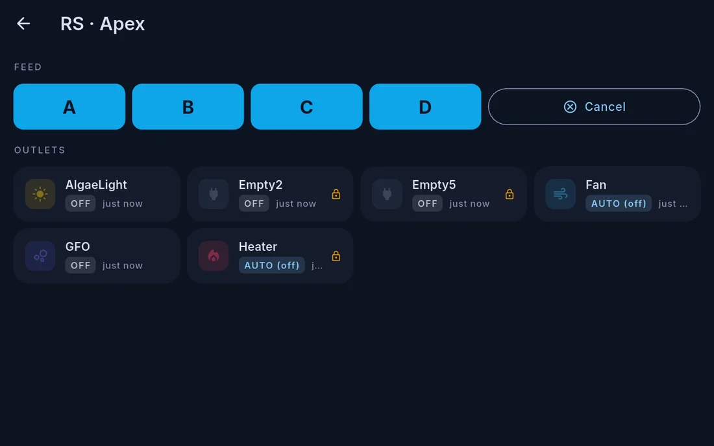

Controlling equipment from Cora Max
Cora Max reaches the same equipment as your phone, with a page for each device. Open them from Settings → Devices, or by tapping a device tile on the dashboard.

What has a page
| Device | Shows |
|---|---|
| Neptune Apex | Probes and outlets, with each outlet switchable |
| Trident | Test state, reagent and waste levels, and the ability to start a test |
| DŌS | Each head's dosing, schedule and remaining container volume |
| Red Sea ReefBeat | Whatever the unit is — dosing heads, reservoir, roller days, pump mode |
| Jecod | Pump mode and intensity, and its day program |
| Maxspect | Mode and intensity per motor, and its schedule |
Schedules
Pump and gyre day programs can be authored at the wall as well as on the phone. The editor is the same: a day graph, a period list, and an action row. See Scheduling equipment.
Outlets
Outlets are also reachable from the Outlets & Feed drawer at the bottom of the dashboard, which lists every outlet in one place. See Outlets and controls.
Consumables
Refill thresholds — reagent, containers, reservoirs — are set from the device's own page here, exactly as on the phone. See Consumables.
Logging and calculating at the tank
Two things are often more convenient at the wall than on a phone:
- Log parameters — enter test results on the on-screen keyboard, from the tank menu
- Dose calculator — work out a correction using the tank's volume and your product strengths, from a parameter's page
What was changed, and by what
Every action is recorded with its cause. See Activity and timeline.
Written for Cora Max 0.28.32 and Cora Mobile 0.5.53.
Still stuck? Email cora@coraiq.tech and we'll help.